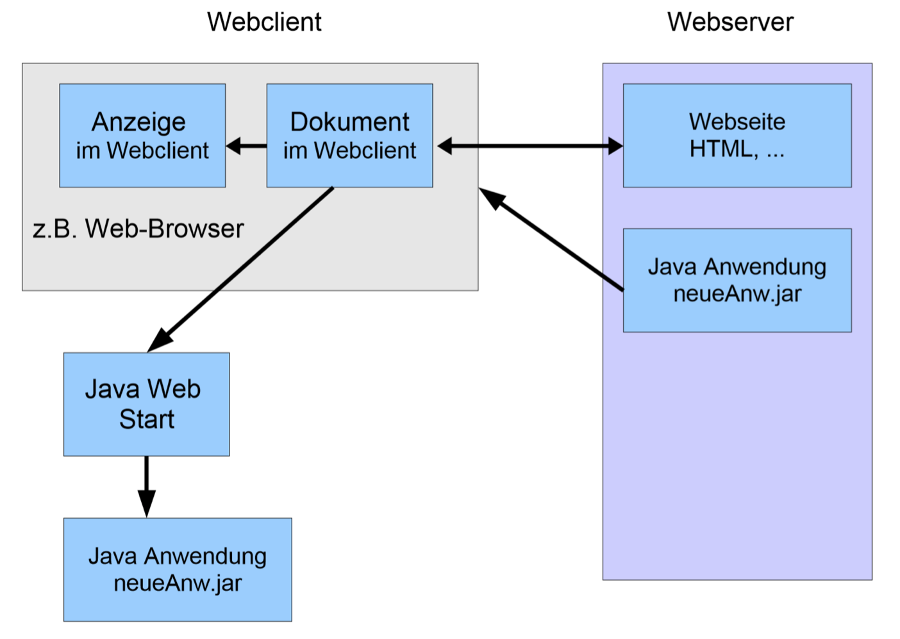
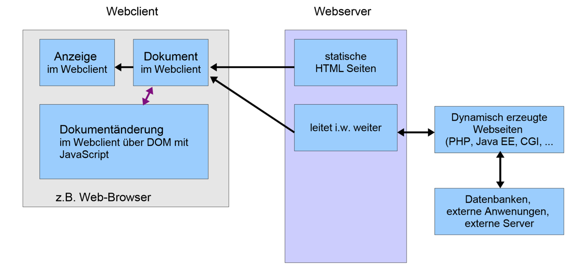

Dieses Portfolio soll keine Eins-zu-Eins Reproduktion des Skriptes darstellen. Vielmehr habe ich mich darauf konztentriert die Kernaussagen herauszufiltern und die für mich wichtigen Inhalte und alle Übungen in diesem Portfolio festzuhalten. Dabei werde ich die gelernten Inhalte auch bei der Erstellung dieses Portfolios miteinbinden.
Die heutige Vorlesung war unsere erste von acht Vorlesung in Web-Programmierung. Dabei sprachen wir zu Beginn über unsere Prüfungsleistung. Als Kurs entschieden wir uns dabei für die Abgabe dieses Portfolios inklusive Übungen und einer kurzen Präsentation mit Fragerunde. Nach Festlegung der Prüfungsleistung sind wir dann in das Thema eingestiegen.
Dabei begannen wir über Vor- und Nachteile einer Software als Web-Anwendung zu sprechen. Der wohl größte Diskussionspunkt dabei war die Ausführung der Anwendung, denn im Vergleich zu einer Software die auf einem System installiert wird, kann eine Web-Anwendung über nahe zu alle modernen Browser, ohne Download und Installation, genutzt werden. Dies ist auch für die Sicherheit des eigenen Geräts vorteilhaft, denn bei einem Download besteht die Gefahr, dass der Downlad Malware (Schadprogramme) enthält, die unser System angreift, ohne dass wir davon wissen. Ein weiterer Vorteil einer Web-Anwendung ist, dass der Code nur einmal geschrieben werden und nicht für die verschiedenen Betriebssysteme und Systemarchitekturen angepasst werden muss.
Im Folgenden haben wir uns verschiedene Arten von Architekturen für Web-Anwendungen angesehen.
Zu Beginn haben wir uns den clientseitigen Ansatz genauer angeschaut. Wie die untere Abbildung zeigt, liegt dabei ein executeable, zum Beispiel eine Java Datei (.jar) auf einem Webserver. Diese Datei wird zur Laufzeit heruntergeladen und auf dem eigenen System/Computer ausgeführt.
Diese Art von Archtitektur bringt, wie oben beschrieben, den Nachteil mit sich, dass eine Datei aus dem Web heruntergeladen und auf dem eigenen System ausgeführt wird. Dabei weiss der Nutzer dann nicht, ob sich Schadprogramme auf dem System ausbreiten.
Der zweite Ansatz ist die serverseitige Ausführung des Codes. Dies stellt somit das Gegenteil zu dem ersten Ansatz da. Dieser Ansatz führt Code, zum Beipsiel PHP-Code, auf dem Webserver aus. Der Endnutzer bekommt dadurch eine statische HTML Seite zu sehen und benötigt kein Download einer Datei. Ein Nachteil, der hierbei entsteht, ist die Nutzbarkeit (=Usability) der Webanwendung.
Der dritte und letzte Ansatz bildet eine Art Schnittstelle und kombiniert die beiden zuvor präsentierten Ansätze. Dabei wird clientseitig beispielsweise mit JavaScript gearbeitet und serverseitig mit PHP gearbeitet.
Dieser Ansatz ermöglicht es die beiden oben genannten Nachteile abzuschaffen, denn somit ist kein Download einer Datei nötig und trotzdem leidet die Usability nicht darunter.
Eine Skriptsprache wie zum Beipsiel JavaScript ist zunächst auch eine Programmiersprache. Sie unterscheidet sich jedoch von herkömmlichen Programmiersprachen, wie zum Beispiel Java, dadurch, dass sie statt eines Compilers einen Interpreter verwendet. Der Interpreter dient zum Übersetzen des Quellcodes. Im Gegensatz zu einem Compiler, übersetzt der Interpreter den Quellcode nicht einmalig vor Programmstart, sondern der Interpreter übersetzt den Quellcode iterativ wärhend der Ausführung des Codes.
Skriptsprachen werden für den Einsatz auf Webservern genutzt. Sie vereinfachen die Verarbeitung von Texten und eigenen sich somit sehr gut zur dynamischen Erzeugung von HTML-Seiten. Diese Dynamik zeigt sich auch bei der Typprüfung, denn Skriptsprachen legen sich im Vorhinein nicht auf einen Datentyp für eine Variable fest. Als Beispiel kann JavaScript als clientseitige Skriptsprache und PHP als serverseitige Skriptsprache eingesetzt werden.
Anmerkung: Heutzutage wird oftmals eine Mischung aus einer konventionellen Programmiersprache, wie Java, und einer Skriptsprache, wie JavaScript, verwendet, um die Vorteile beider Modelle nutzen zu können.